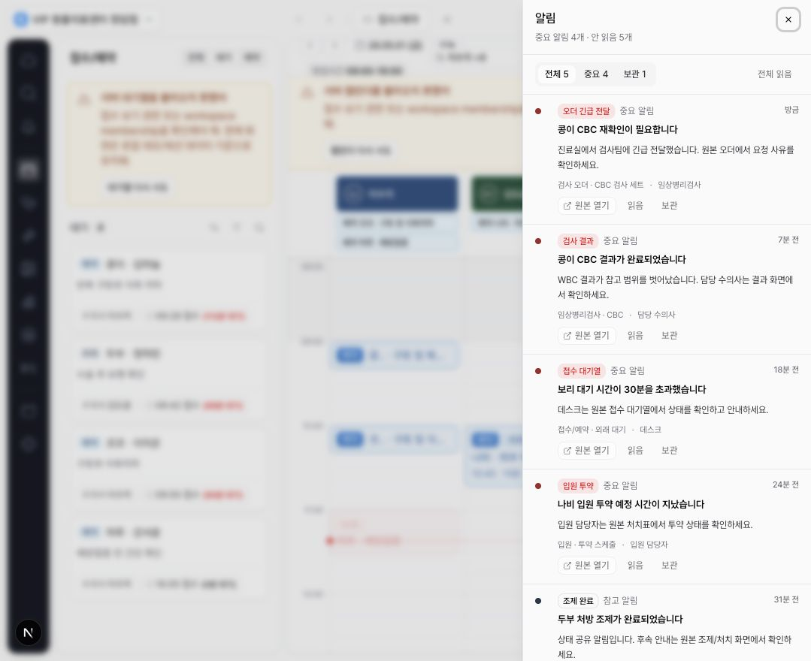

DEN-397 전역 알림 센터 drawer foundation 완료 보고서
CLAiR shell 상단 알림 벨에서 열리는 오른쪽 drawer형 전역 알림 센터 v0 기반을 구현했다. 현재
업무 화면은 유지되고, badge 숫자는 전체 안 읽음이 아니라 unread && badge_count === true
resolver 결과만 표시한다.
요청
전역 알림 벨, badge resolver boundary, 오른쪽 drawer open/close, header/unread count/filter/action area를 구현한다. drawer 내부 action은 원본 이동, 읽음, 보관, 전체 읽음 같은 v0 범위로 제한한다.
변경
src/features/notifications/mock-notifications.ts에 v0 fixture와 badge/unread resolver를 추가했다.src/features/notifications/global-notification-drawer.tsx에 오른쪽 drawer shell, header, filters, row shell을 추가했다.src/shell/workspace-tabs-bar.tsx의 기존 알림 버튼에 badge, accessible label, drawer open handler를 연결했다.src/shell/app-shell.tsx에서 전역 drawer open state를 관리해 현재 workspace route를 유지한다.tests/app-shell.spec.ts에 desktop badge/drawer smoke와 narrow viewport fit 테스트를 추가했다.
제외 범위
live push, service worker, provider 발송, Kakao/SMS/email, remote Supabase migration/RLS/live validation, 알림 설정/전체 페이지, source deep-link navigation, dirty-state guard, localStorage read/archive persistence, toast stack, 알림 안 final action은 구현하지 않았다.
검증
npm run lint통과. 기존 경고 4개는 유지된다.npx tsc --noEmit통과.PLAYWRIGHT_BASE_URL=http://127.0.0.1:3109 npx playwright test tests/app-shell.spec.ts -g "global notification"통과.- 인앱 브라우저에서 drawer open, badge count, unread count, filter/action area를 확인했다.

후속
DEN-398은 Linear-style notification row와 read/archive/filter state를 구현하고, DEN-399는 localStorage persistence와 역할 큐 local-first disclaimer를 연결해야 한다.